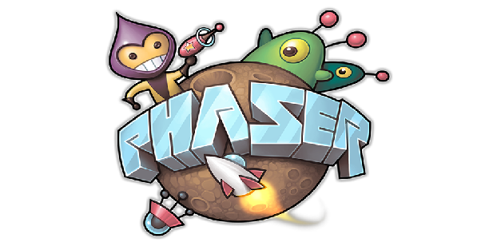
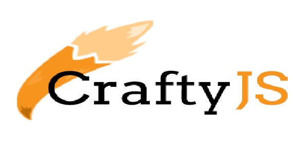
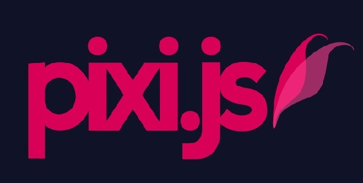
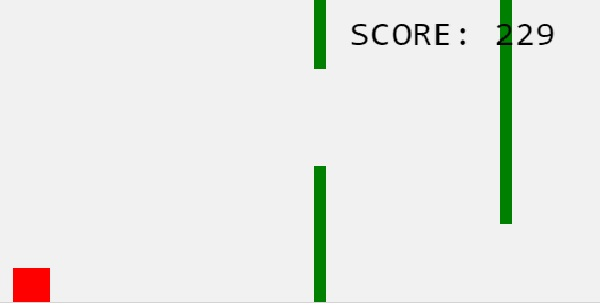
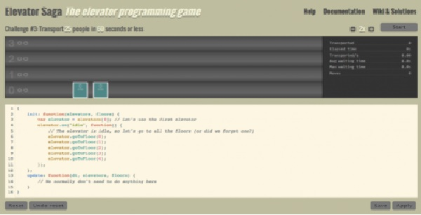

PHASER.IO

Phaser es un marco de juego 2D de software gratuito para hacer juegos HTML5 para computadoras de escritorio y móviles. Fue creado por Photon Storm. [2]
Phaser usa un renderizador Canvas y WebGL internamente y puede intercambiarse automáticamente de acuerdo con el soporte del navegador. Esto permite una representación rápida en equipos de escritorio y dispositivos móviles. Utiliza la biblioteca Pixi.js para renderizar.
Los juegos se pueden compilar para iOS, Android y aplicaciones de escritorio nativas a través de herramientas de terceros como Apache Cordova.
Link Ejemplo
FRAMEWORK MELONJS
Fresco y ligero. MelonJS es un motor de juegos HTML5 de código abierto que permite a los desarrolladores y diseñadores centrarse en el contenido.
Link Ejemplo
FRAMEWORK CRAFTYJS

Crafty es un buen motor de juegos 2D HTML5 en desarrollo activo con una huella pequeña (14.5KB comprimido) que proyecta una sintaxis similar a jQuery en lugar de un modelo de herencia clásico más tradicional.
Link Ejemplo
FRAMEWORK PIXIJS

Pixi.js es una biblioteca de gráficos de código abierto 2D WebGL de JavaScript de navegador abierto con un lienzo alternativo.
Link Ejemplo
JUEGO OBSTACULOS

Link Juego
JUEGO ELEVATOR SAGA

Se trata de play.elevatorsaga.com, una aplicación en la que podremos alterar la función del ascensor modificando el código directamente en su página, viendo como se altera su comportamiento después de pulsar el botón “apply”.
Link Juego